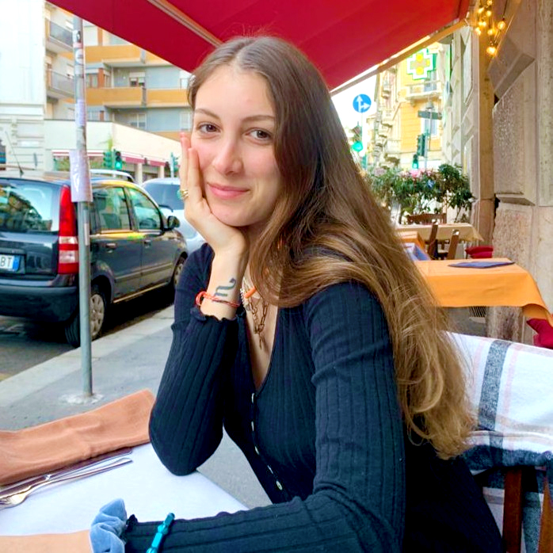

Hello!
I'm Irem Erpolat

Education
Politecnico di Milano
Milan, Italy
September 2019 - March 2023
September 2019 - March 2023
- Bachelor of Science in Architectural Design, GPA 91/110 (24.8/30)
- Final Project: Development of Public Spaces in Different Contexts
- Relevant coursework: Traditional and Innovative Materials for Buildings, Fundamentals of Representation, Architectural Technology Fundamentals, Heritage Preservation Fundamentals, Urban Planning, Building Technology, Elements of Architectural Typology, Interior Design, Project Evaluation, Mechanics of Materials and Structures, Building Physics
Uskudar American High School
Istanbul, Turkey
September 2014 - June 2019
September 2014 - June 2019
- AP Calculus 5/5
- AP French 4/5
Neslin Degisen Sesi Schools
Istanbul, Turkey
September 2006 - June 2014
September 2006 - June 2014
- Francophone primary and middle school associated with the Notre-Dame de Sion Istanbul Lycée Français
Experience
Ciragan Palace Kempinski
ARCHITECTURAL ASSISTANT
Istanbul, Turkey
September 2023 - Ongoing
Istanbul, Turkey
September 2023 - Ongoing
- Work on the Ciragan Palace redesign project aimed to combine modern designs with the historical textures of the hotel building to produce an updated, elegant and authentic exterior and interior
- Inspect and assess rooms for design and architectural elements continually during the project to ensure quality
- Keep notes during design and construction meetings to ensure the timely completion of every project goal
- Take measurements and photos before the project's beginning and after for comparisons and reports
C Concept Design BV
INTERN
The Hague, Netherlands
Summer of 2022
The Hague, Netherlands
Summer of 2022
- Reviewed manufacturers for green wall constructions for the renovation project of the Rotterdam Building and worked alongside the engineer to help them pick a contractor for the work, discussed several designs and created Photoshop mock-ups for the Rotterdam Building project
- Researched resorts in the United Republic of Tanzania to create a booklet for the investors of the eco-resort project before their visit to the project site
- Modified the architectural plans, graphics and 3D materials to be sent to the clients for the Dar Es Salaam project after changes based on the on-site inspections and considerations
- Created 3D models for potential clients to give them an idea of the proposed projects
ERP Yapi (Construction)
INTERN
Istanbul, Turkey
May - June 2021
Istanbul, Turkey
May - June 2021
- Observed how Canadian-style wooden houses are designed on paper and then later translated into physical constructions, beginning from setting their foundation
- Kept track of the scheduling of the construction and inspected their progress and punctuality
LemayMichaud
INTERN
Montréal, Canada
July - August 2017
Montréal, Canada
July - August 2017
- Joined the design phase of a new hotel project to observe, and presented ideas on the new building and new room concepts created on Sketchup
- Took field photographs of a prospective construction site for initial research
- Collated the public reporting on LemayMichaud from archives, newspapers and online websites
Projects
Graduation Project
Development of Public Spaces in Different Contexts: Elements of Creating Public Spaces in Design
Halic Shipyard Renovation Plan
January - June 2022
[3-Person Group]
[3-Person Group]
- Identified how pedestrians experience the area, how the area is connected to the main highway and other transportation methods, and which nearby areas are frequently visited to figure out priorities in the design
- Using historically and locally valued buildings including the Tersane-i Amire Anatolian High School building as reference points, came up with an authentic architectural signature; also made use of the old shipyard pools to preserve their historical and cultural memories by integrating them into the new communal designs
- Created a social space that includes waterfront pedestrian roads, a museum, an exhibition area, a cinema, an amphitheater, a tramline and a hotel; ensuring car-free transportation with full connectivity to the city
Mercato Gorla Public Complex Design
September 2020 - July 2021
[3-Person Group]
[3-Person Group]
- Planned a public complex from scratch where Mercato Gorla is on the main road at Viale Monza that would provide a free and welcoming “hiding spot” to locals that would accommodate both social and private activities
- Identified the territorial fragilities of the neighbourhood being the lack of greenery and public parks, prioritizing them in our design by creating a circular economy using communal floor and rooftop gardens and a rooftop greenhouse that could be utilized to grow seeds procured from the flower shops in the complex and grow food to provide for the nutritional needs of the community with assistance and lessons from urban farmers
Milano Train Station Conversion Project
January - June 2021
[3-Person Group]
[3-Person Group]
- Conceptualized how the disused Porta Romana railway yard in Milano can be first converted into an athlete complex for the 2026 Winter Olympics and, after the Games, could be converted to student housing
- Designed a 7-floored building for a fixed amount of people and with specific necessary facilities such as a policlinic, library, study space, café and more, following regulations for accessibility, and with the environment and the architectural style of the surroundings in mind whilst prioritizing attractive communal spaces that encourage social interactions and physical activities to enhance a sense of belonging
- Used angles and courtyards to separate communal areas from the private living quarters
- Planned out what materials and construction techniques are necessary for these plans to be actualized practically, paying special attention to durability and eco-friendliness, drawing protracted floorplans from multiple angles
Other Projects
Varese Museum Artist Installation and Microhome Project
September 2021 - February 2022
[4-Person Group]
[4-Person Group]
- Built a mini smart house in the Varese Museum meant just for the chosen artist to live in for one month, using fungi as materials in the 3D-printed project
- Designed an installation to showcase the artist and their work as a museum piece as a side-project
Milano Primary School Renovation Plan
September 2021 - January 2022
[3-Person Group]
[3-Person Group]
- Created a new design for an old Milano primary school that would take into account the large and old trees in the lot to make sure they are unharmed and integrated into the new buildings
Pavia Social Housing Design
September 2019 - June 2020
[3-Person Group]
[3-Person Group]
- Designed a social housing facility in an empty lot in Pavia with a mind for the architectural style in the vicinity, fragilities, and future residents' needs
Examination of Barcelona Throughout History
January - June 2020
[4-Person Group]
[4-Person Group]
- Studied Barcelona's maps, city plans and population on micro/macro levels, researched the reasons for their fluctuations throughout time, and wrote 6 reports for 20-30-year time periods
- Drew our own maps and graphics to showcase the changes in Barcelona throughout the decades
Gedikpasa Heritage Examination
January - June 2020
[3-Person Group]
[3-Person Group]
- Researched the cultural and historical significance of Gedikpasa, Istanbul and its buildings
- Determined a culturally significant heritage site that has been dilapidated beyond human activity and wrote a report on how the area can be renovated in a way that would preserve its cultural and historical signature
On-Site Observation Reports for Houses During Construction
September 2019 - January 2020
- Surveyed houses still in construction and finished houses in a construction yard to observe materials and technologies used during different phases of construction and the techniques used in construction
- Reviewed and reported on these observations with drawings, photographs and text in a site report
Analysis and 3D Recreation of Frank Gehry's Winton Guest House
September 2019 - January 2020
[3-Person Group]
[3-Person Group]
- Analyzed plans of the building and studied its axonometry, shadow/light, and topography with 2D drawings
- Reconstructed the building in 3D space with physical materials and later digitally using the software Rhino to dissect the configuration of the architectural space
Certificates
- Investigated the significance of acoustics in architecture and delved into the core principles of sound management to elevate the design of interior spaces, aiming to optimize the comfort of occupants
- Examined cutting-edge tools for addressing challenges in both sound and lighting, while also gaining insights into the standards that regulate acoustic requirements across a variety of applications
Post-Covid Building Design
Certificate
October 2023
October 2023
- Studied identifying the significance of health concerns associated with the COVID-19 pandemic concerning building design and product selection
- Assessed safety aspects to safeguard buildings, occupants, and owners from harm and damage and how to implement welfare-centric aspects to design and promote equitable access, enhancing the human experience with thought for daylight and outdoor access for sustainable design
- Examined several design elements and tricks to improve space functionality, acoustics and air quality while improving the wellness of the people in the environment such as pavers, skylights, and underlayment
Skills
Software
- Rhino
- Sketchup
- Adobe Photoshop
- V-Ray
- AutoCAD
- Adobe Illustrator
Languages
- Turkish (Native)
- English (Advanced, IELTS 7 [2018])
- French (Intermediate, DELF B2, [2018])
- Italian (Beginner)
Sports
- Tennis
- Basketball (licensed in primary school)
- Fitness
- Pilates
Interests
- Piano
- Guitar (passed Grade 2 from London College of Music Examinations)